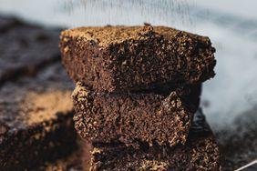

Vegan Brownies

Description
Mmmmm, vegan brownies! These brownies are very gooey, which is a good thing
in my book. However, if you prefer them a little more solid, you'll need to
bake the brownies longer than the recommended time. Great for people with
egg or dairy allergies, too!
Ingredients
- 2 cups unbleached all-purpose flour
- 2 cups white sugar
- ¾ cup unsweetened cocoa powder
- 1 teaspoon baking powder
- 1 teaspoon salt
- 1 cup water
- 1 cup vegetable oil
- 1 teaspoon vanilla extract
Steps
- Preheat the oven to 350 degrees F (175 degrees C). Grease a 9x13-inch baking dish.
- Stir together flour, sugar, cocoa powder, baking powder, and salt in a large bowl. Pour in water, vegetable oil, and vanilla; mix until well-blended. Spread evenly in the prepared dish.
- Bake in the preheated oven until top is no longer shiny, 25 to 30 minutes. Let cool for at least 10 minutes before cutting into 16 squares.